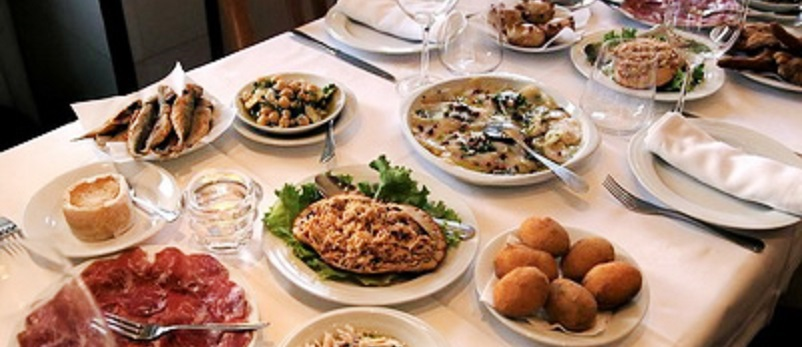
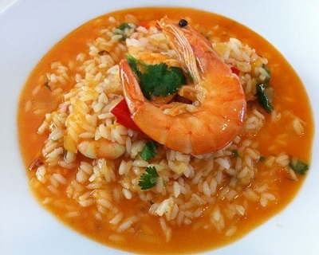
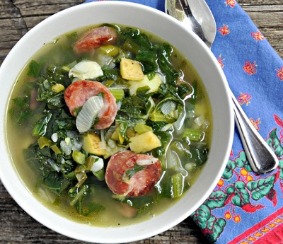
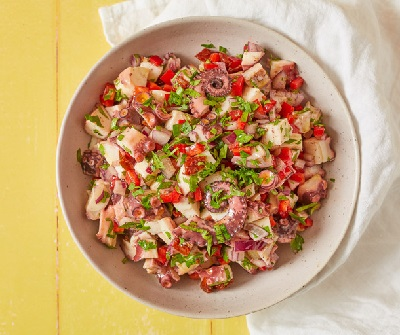

葡萄牙Portugal


食物名稱：海鮮飯 (arroz de marisco)
食物介紹：
葡式海鮮飯包含了種類繁多的海鮮，比如蝦、螃蟹、蛤蜊，藍貝等，不同地域的海鮮飯用的食材都不盡相同。
葡式海鮮飯是最為地道的葡萄牙傳統美食，
在西班牙的飲食文化中佔有很重要的位置，
它不同於鄰國西班牙的海鮮飯paella，直觀上最大的區別是葡式海鮮飯是帶湯的。
品味著新鮮的蝦肉和蟹肉，嚼著浸滿湯汁的米飯。

食物名稱：綠色蔬菜湯 (Caldo Verde)
食物介紹：
Caldo Verde起源於葡萄牙北部，傳統上的原料是是羽衣甘藍。
由於其製作簡易，開胃異常而迅速傳遍各個葡語國家和地區。
傳統的青菜湯製作時須將蔬菜切成碎片狀，並和土豆、橄欖油共同烹飪而成。
在人們習慣再加入一些葡式香腸，味道更加鮮美。

食物名稱：章魚沙拉 (Salada de polvo)
食物介紹：
難以想像肉質超級柔軟，跟希臘人一樣很會處理章魚。
涼拌上橄欖油，整個清爽不油膩，
是夏日的最佳開胃菜!